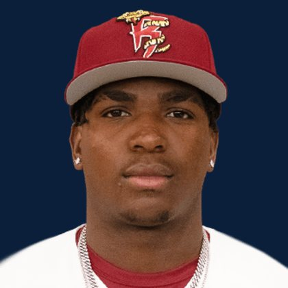

BASE KEEP
The Keep · The Diamond
Player File · SS MIL

Luis Peña
SS · MIL · age 19 · B/T RR · 5' 11" / 185 lbs · El Limon, Dominican Republic
Keep avg120.29
# Boards17
BK Value2,387
Spread32–238
Hitting
| Year | G | AB | R | H | 2B | HR | RBI | SB | BB | SO | AVG | OBP | SLG | OPS |
|---|---|---|---|---|---|---|---|---|---|---|---|---|---|---|
| 2026 AA | 2 | 8 | 1 | 2 | 0 | 0 | 2 | 0 | 0 | 2 | .250 | .250 | .250 | .500 |
The Keep#118BK 2,387
The Lineup#86BK 3,265
The Diamond#122BK 2,298
The 2026 line
Keep #118 · avg 120.29 · 17 boards · .250 / 0 HR / 0 SB / .500 OPS
Baseball Savant
Starcast · spray · pitch
Percentile ranks (Starcast) plus the official Savant spray chart for bats and pitch chart for arms. Open the full Baseball Savant page.
No 2026 Savant percentile sample yet. The spray and pitch charts below still load from Baseball Savant.
Hits spray chart
Minus
- Board spread 32–238 (206 ranks).
Board graph
Spread 32–238 · 17 sources
Every Board
Spread 32–238 · 17 sources
| Source | Rank |
|---|---|
| TDG Points | 32 |
| Dynasty League Baseball | 85 |
| Four-Seam Fantasy | 95 |
| FantasyPros Dynasty ECR | 105 |
| Baseball Prospectus | 112 |
| The Dynasty Dugout | 112 |
| Baseball America | 112 |
| RotoWire | 119 |
| FanGraphs The Board | 119 |
| Razzball | 120 |
| CBS Sports | 130 |
| Ottoneu | 131 |
| ESPN | 132 |
| NFBC ADP | 132 |
| ATC ROS | 132 |
| Pitcher List | 139 |
| RotoGraphs Model | 238 |
All players · The Keep · The Diamond · BK News · The Lineup · Pitchers · Calculator